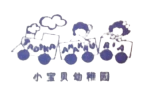
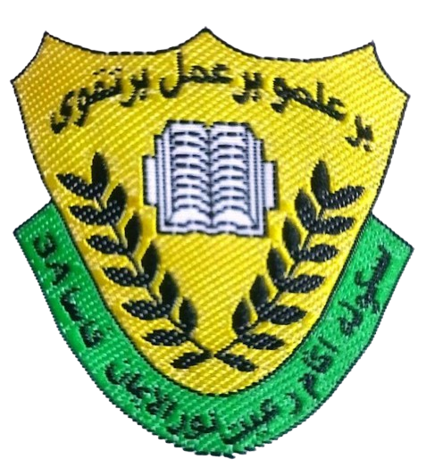

| NAME OF INSTITUTION |
LOGO |
DESCRIPTION |
| Tadika Anakku Ria |
 |
I started to study in Tadika Anakku Ria since 2008 which is I was 5 years old. |
| Sekolah Kebangsaan Kg. Dato' Seri Kamaruddin |
 |
I began my five-year education here in 2010. At that time, Mr. Nasaruddin bin Ahmad was the head teacher.
I have a lot of friends here at school, so I truly love it. My residence is around two km away from this school. Every day, my father or mother sends me to school by a motorcycle. Eventually, in 2015, I graduated from class 6Terbilang. |
| Sekolah Rendah Agama Rakyat Nurul Iman |
 |
I attended every evening class for five years, beginning in 2010. Ustaz Abdul Aziz has been the school's principal up until this point. Because I have so many friends and such wonderful teachers here, I truly like coming to school. My residence is located behind this school. My pals who live close and I are going to walk to school together. In 2015, I passed the test for the Islamic Religion Lower Certificate, completing the fardhu ain studying here. |
| Sekolah Menengah Kebangsaan Kg. Dato' Seri Kamaruddin |
 |
This school is where I have many sweet and bitter memories. I started entering this school starting in 2016 when I was in form 1. I felt a bit lonely at first because many of my friends in primary school had already moved and attended a full boarding school while I was the only one here. However, I try to be active in this school by participating in various extracurricular activities. This school is a school located not far from Seri Manjung town. I finished my Malaysian Certificate of Education here in 2020 while our world is still in the midst of the Covid-19 pandemic. |
| Universiti Teknologi Mara |
 |
I continued my studies at UITM Kedah as a student majoring in Information Management for two and a half years. In the beginning, I was so excited to be a university student because it was my dream since childhood. I am grateful because the chosen course was the first option I applied for online. I enjoy studying here because I can gain a lot of knowledge and travel in other states. Now, I am in my last semester as a diploma student and maybe after this I will try to continue studying at the degree level. |